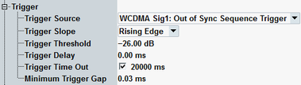

The trigger parameters configure the trigger system for the WCDMA out-of-sync handling measurement.

Selects the source of the trigger event. Some of the trigger sources require additional options.
The only suitable trigger source is the following uplink frame aligned trigger:
"WCDMA Sig<n>: Out of Sync Sequence Trigger": out-of-sync handling trigger signal provided by WCDMA signaling application instance <n>. This selection is suitable for combined signal path measurements (or for standalone measurements if the signaling application uses another RF path than the measurement).
Remote command:Qualifies whether the trigger event is generated at the rising or at the falling edge of the trigger pulse. This setting has no influence on "Free Run" measurements and for evaluation of trigger pulses provided by other firmware applications.
Defines the input signal power where the trigger condition is satisfied and a trigger event is generated. The trigger threshold is valid for power trigger sources. It is a dB value, relative to the reference level minus the external attenuation ("<Ref. Level> – <External Attenuation (Input)> – <Frequency Dependent External Attenuation>"). If the reference level equals the maximum output power of the DUT and the external attenuation settings are correct, the trigger threshold is relative to the maximum input power.
A low threshold can be required to ensure that the R&S CMW can always detect the input signal. A higher threshold can prevent unintended trigger events.
Defines a time delaying the start of the measurement relative to the trigger event. This delay is useful if the trigger event and the uplink DPCH slot border are not synchronous. A measurement starts always at an uplink DPCH slot border. Triggering a measurement at another time can yield a synchronization error.
For internal trigger sources aligned to the downlink DPCH, an additional delay of 1024 chips is automatically applied. It corresponds to the assumed delay between downlink and uplink slot.
This setting has no influence on free run" measurements.
Remote command:Sets a time after which an initiated measurement must have received a trigger event. If no trigger event is received, a trigger timeout is indicated in manual operation mode. In remote control mode, the measurement is automatically stopped. The parameter can be disabled so that no timeout occurs.
This setting has no influence on "Free Run" measurements.
Defines a minimum duration of the power-down periods (gaps) between two triggered power pulses. This setting is valid for an "(IF) Power" trigger source.
- At the IF power-down ramp of each triggered or untriggered pulse, even if the previous counter has not yet elapsed. A power-down ramp is detected when the signal power falls below the trigger threshold.
- At the beginning of each measurement. The minimum gap defines the minimum time between the start of the measurement and the first trigger event.
The trigger system is rearmed when the timer has reached the specified minimum gap.

This parameter can be used to prevent unwanted trigger events due to fast power variations.
Remote command: